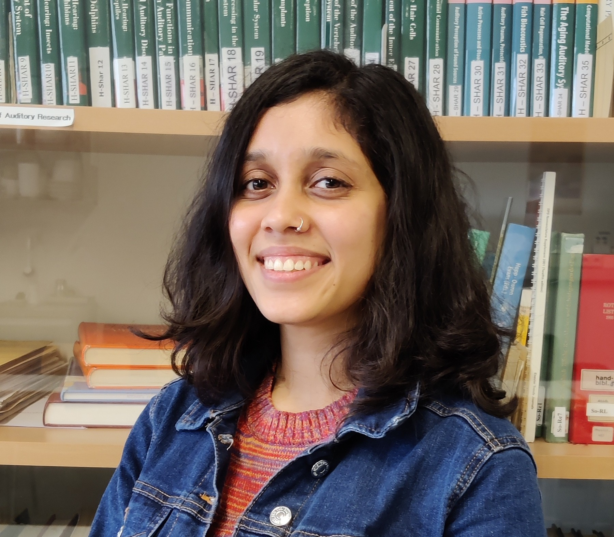
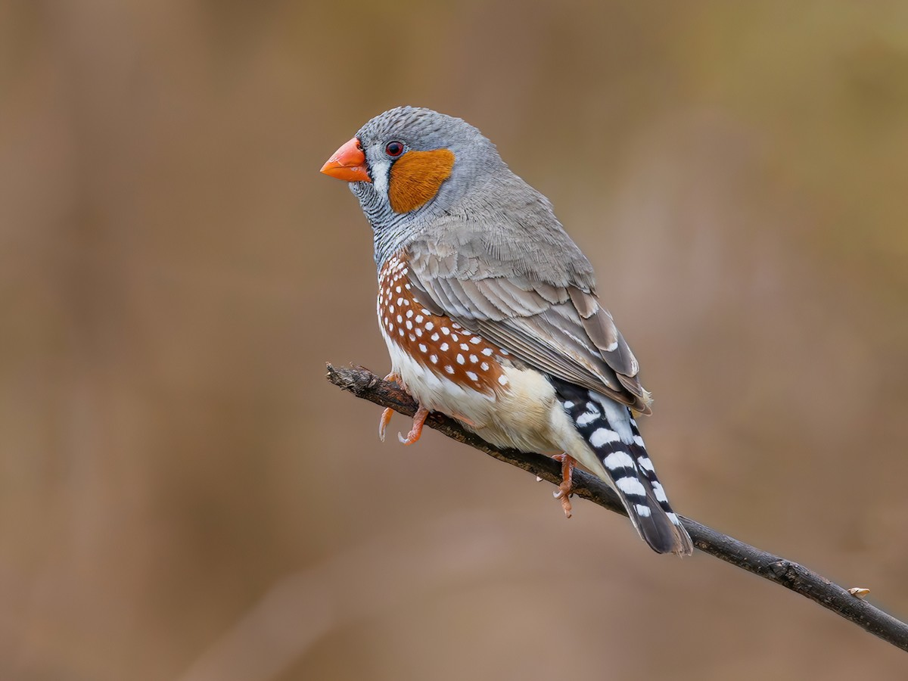
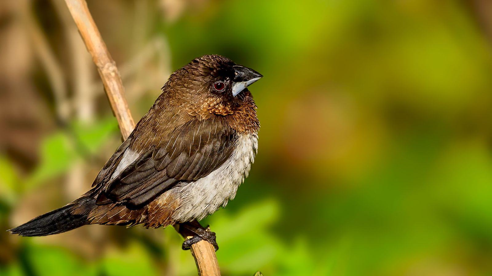
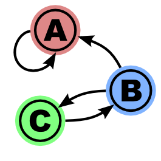

About Me

I am currently a PhD student in the Veit lab at the University of Tuebingen. I did my BS-MS degree from IISER Pune, India and my master's thesis at the MPI-BI with Daniela Vallentin.
My three main passions include research, science communication, and hiking. I also love reading, learning guitar, and exploring new recipes. Feel free to reach out at avani.koparkar@uni-tuebingen.de.
Projects
Much like humans, songbirds like zebra finches, Bengalese finches, and canaries learn their songs from their tutors. I am interested in the development of song and the neuronal basis of song sequencing.

Motor control of learned song
Exploring how juvenile zebra finches learn songs from adult tutors and the neuronal mechanisms involved.

Neuronal basis of complex sequencing
Investigating the flexible song syntax of Bengalese finches and its neural underpinnings.

Modeling syntax hierarchy in song
Using mathematical and computational models to understand song learning and production in birds.
Outreach

Add your outreach and science communication activities here.
Hobbies

Add your hobbies and interests here.